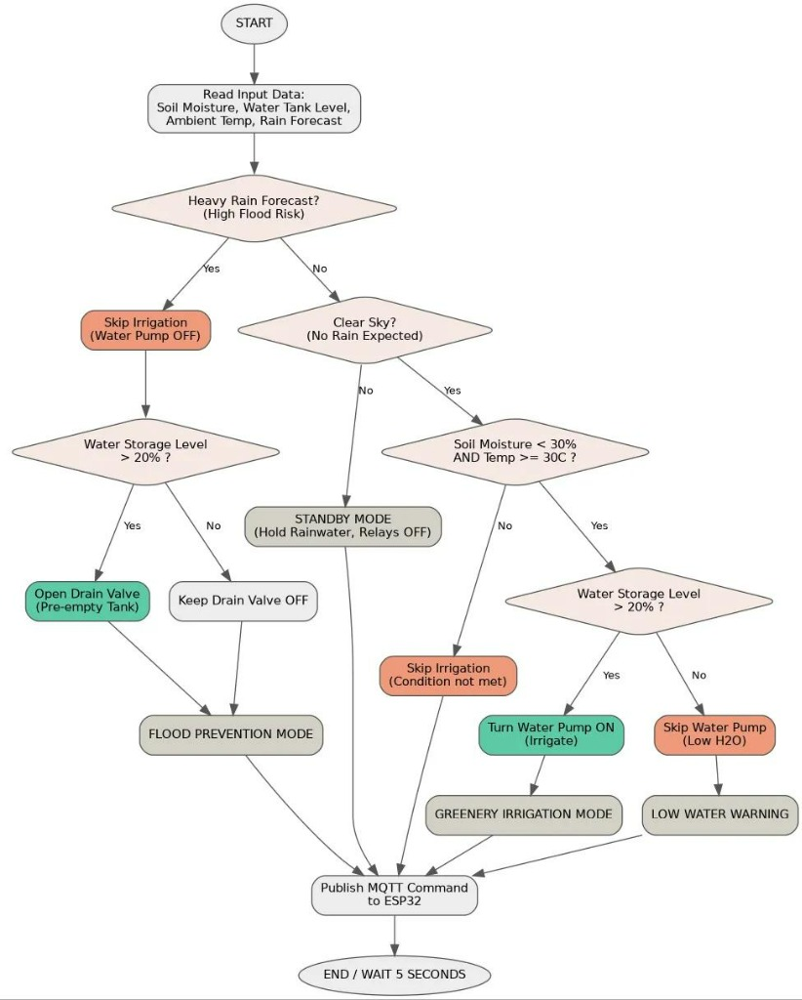

An integrated urban climate management platform that uses real-time weather API forecasts and IoT sensor data to proactively address heatwave droughts (automated micro-irrigation) and torrential rain (smart pre-storm drainage) using a single rainwater storage tank.

| Operating Mode | Description & Action |
|---|---|
| FLOOD_PREVENTION | P2 Pre-drain active (empties tank to ≤ 10%) |
| GREENERY_IRRIGATION | P1 Water Pump 12 s pulse ON (~0.34 L micro-dose) |
| IRRIGATION_SOAK | Waits 10 min for soil absorption before next evaluation |
| LOW_WATER_WARNING | Hot & dry, but tank storage level ≤ 20% (holds water) |
| STANDBY | Normal monitoring mode (holds harvested rainwater) |
| FAIL_SAFE | Sensor/API outage — all relays shut OFF for safety |
| Feature | Conventional Municipal Drainage | ACE SDS Smart Platform |
|---|---|---|
| Primary Goal | Flood prevention only | Flood + Heatwave + Drought integrated control |
| Rainwater Processing | Store then discharge into sewer (wasted) | Filtered ➔ Stored ➔ 100% Recycled for Irrigation & Mist |
| Water Flow Mechanism | One-way gravity discharge | Bi-directional smart routing (P1 Irrigation & P2 Pre-drain) |
| Decision Timing | Reactive response after heavy rain | Proactive 1-hour KMA forecast API poller |
| Application Scope | Large public civil infrastructure | Roofs, planter boxes, smart shade micro-zones |
Demonstrating the 1:1 physical hardware prototype — featuring real-time water pump switching for P1 (Heatwave Irrigation) and P2 (Flood Pre-drainage) based on live forecast API signals and sensor telemetry.